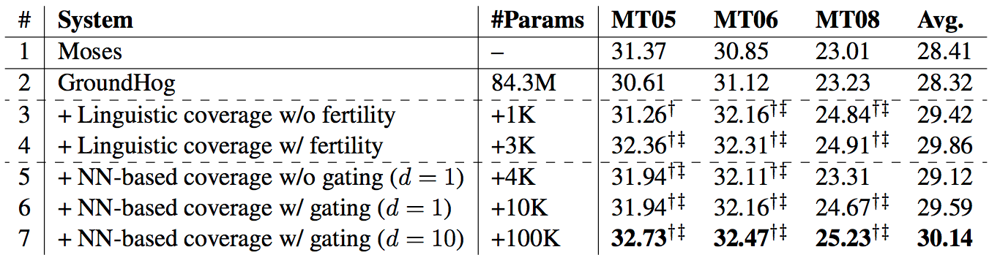
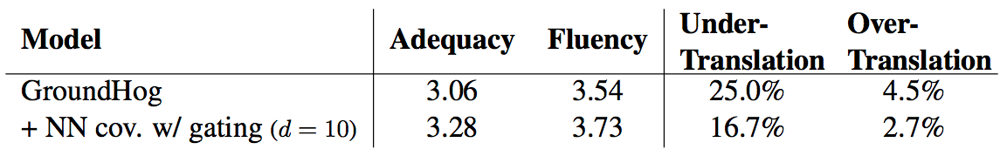
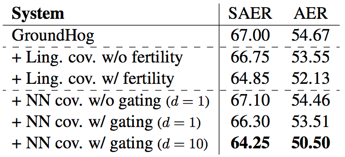
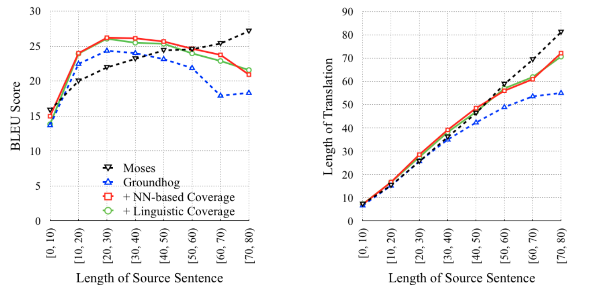

Coverage-based Attention
Updated:
Zhaopeng Tu et al.[1] proposed coverage-based Attention to reduce over-translation and under-translation problems. They used a coverage vector to keep track of the attention history which pushes model to consider more about untranslated source words.
Coverage Model in SMT
Coverage model in SMT takes advantage of past alignment information. For example, if a source word has been translated, it is less likely to be translated once more. If in a model translated words are not allowed to be translated again, it is called hard coverage.
Apply Coverage Model to NMT
The most natural way to model coverage is using coverage vector for each source word, which is updated after every step. Formally, the coverage vector $\vec{c}_{i,j}$ is defined as
$$
\vec{c}_{i,j} = g(\vec{c}_{i-1,j},\vec{\alpha}_{i,j}, \Phi(\vec{h}_j), \psi)
$$
where $g()$ is update function, $\vec{c}_{i,j}$ is the coverage vector at timestep $i$ on $\vec{h}_j$, $\vec{\alpha}_{i,j}$ is the alignment at timestep $i$ on $\vec{h}_j$, $\Phi(\vec{h}_j)$ is a word-specific feature and $\psi$ are auxiliary inputs.
After coverage vector $\vec{c}_{i,j}$ is obtained, the attention model is rewrited to include the coverage vector. That is
$$
\alpha_{i,j} = align(\vec{t}_{i-1},\vec{h}_j,\vec{c}_{i-1,j})
$$
Linguistic Coverage
In NMT, every source words contributes to the translation of every target words. Hence, all contributions of a source word are cumulated to indicate its coverage. The model is forced to focus less on source words with larger coverage. from this linguistic prospective, the coverage is
$$
\vec{c}_{i,j} = \vec{c}_{i-1,j} + \frac{1}{\Phi_j}\vec{\alpha}_{i,j} = \frac{1}{\Phi_j}\sum_{k=1}^{i}\vec{\alpha}_{k,j}
$$
where $\Phi_j$ is a pre-defined value indicating the number of target words $x_j$ is expected to generate. It is impractical to pre-define the exact $\Phi$ for every source values. However, it is a need-to. Because there exists widely that a source word are focused at several times.
Partial Neural Coverage
Everything that can not be mannually set can be learned. Hence, $\Phi_j$ learned during training is defined as
$$
\Phi_j = N\sigma(U\vec{h}_j)
$$
Neural Coverage
Using Neural Coverage is to stuff all inputs in a neuron. The form is
$$
\vec{c}_{i,j} = f(\vec{c}_{i-1,j},\vec{\alpha}_{i,j}, \vec{h}_j, \vec{t}_i)
$$
where $\vec{h}_j$ is the context at position j and $\vec{t}_i$ is the hidden state at timestep i. In their preliminary experiments, considering more inputs does not always lead to better translation quality.
Training Setting
- Used LDC corpora as training set(27.9M Chinese words and 34.5M English words), NIST 2002 as dev set, and NIST 2005, 2006 and 2008 as test sets.
- Limited the source and target vocabularies to the most frequent 30K words in Chinese and English.
- N=2 in Partial Neural Coverage.
- Trim sentences of length more than 80 words.
- Word embedding dimension is 620.
- The size of a hidden layer is 1000.
Results
Table 1. Case-insensitive 4-gram NIST BLEU scores of models

Table 2. Subjective evaluation of translation adequacy and fluency. The numbers in the last two columns denote the percentages of source words are under-translated and over-translated, respectively.

Table 3. Evaluation of alignment quality

Figure 1. Effects on Long Sentences

Comments
- I personally think $\Phi_j$ indicates how much source words $x_j$ can contribute.
- Partial Neural Coverage is so like local attention.
- Just a guess. Using $\vec{w}$ instead of $\vec{h}$ might help.
References
[1] Zhaopeng Tu et al. Modeling Coverage for Neural Machine Translation. ACL 2016.